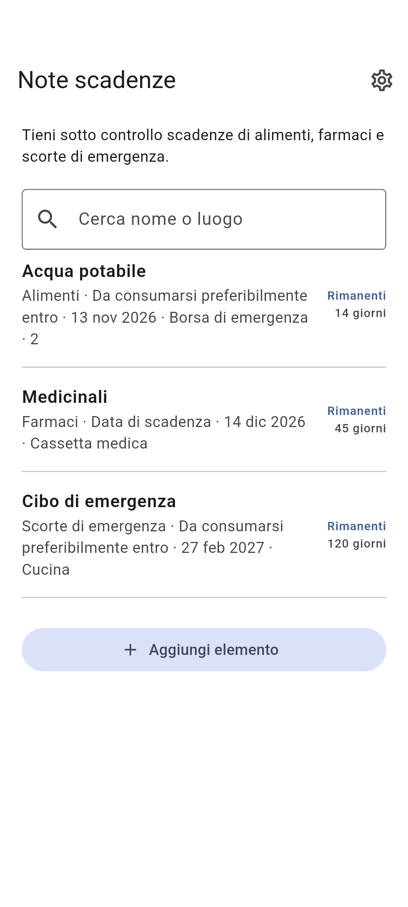

DOTNULL / Note scadenze
Le scadenze a colpo d’occhio.
Tieni sotto controllo scadenze di alimenti, farmaci e scorte di emergenza.
App in fase di sviluppo.
Informazioni ↓
HOW IT WORKS
Informazioni
01
Aggiungi nome e data
02
Scegli il tipo di data
03
Visualizza prima le scadenze vicine
Informazioni
- Categoria
- Alimenti · Farmaci · Scorte di emergenza · Altro
- Luogo di conservazione (facoltativo)
- Cerca nome o luogo
- Tipo di data
- Da consumarsi preferibilmente entro · Da consumarsi entro · Data di scadenza
Privacy
I dati sono salvati sul dispositivo e consultabili offline.
I dati possono andare persi eliminando l’app o in caso di guasto del dispositivo.
Gli elementi sono salvati su questo dispositivo. Il fornitore di annunci può usare dati.
Controlla la data riportata sul prodotto.